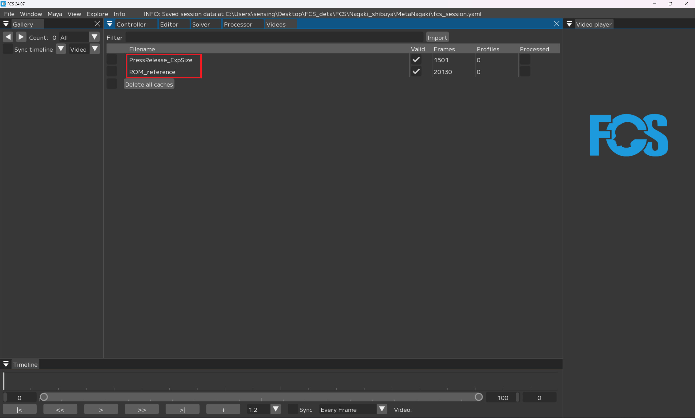
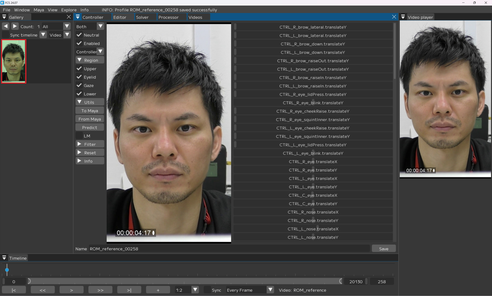
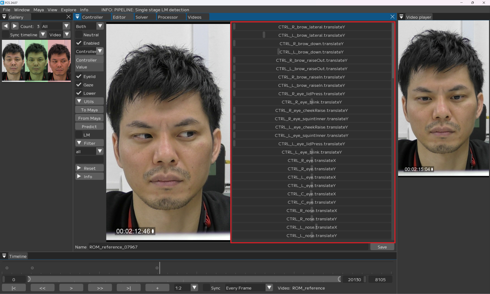
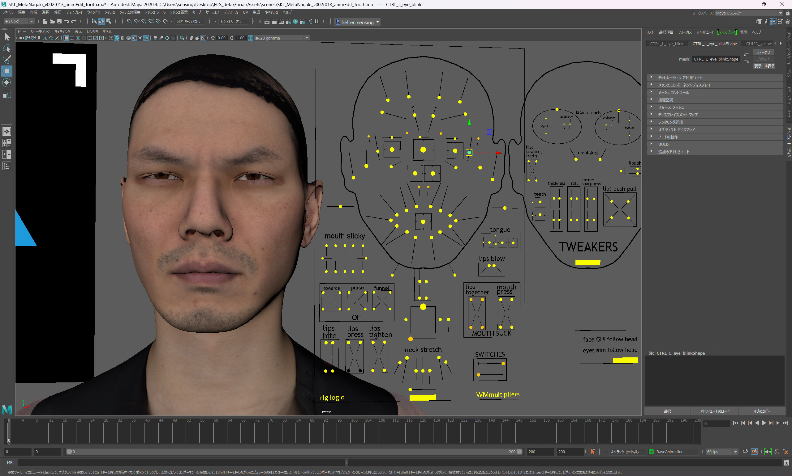
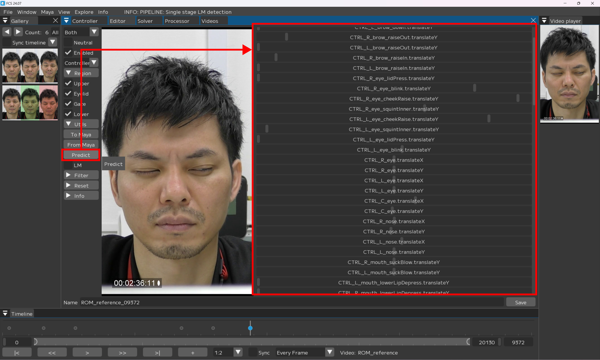
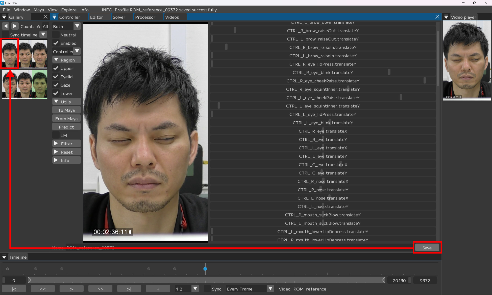
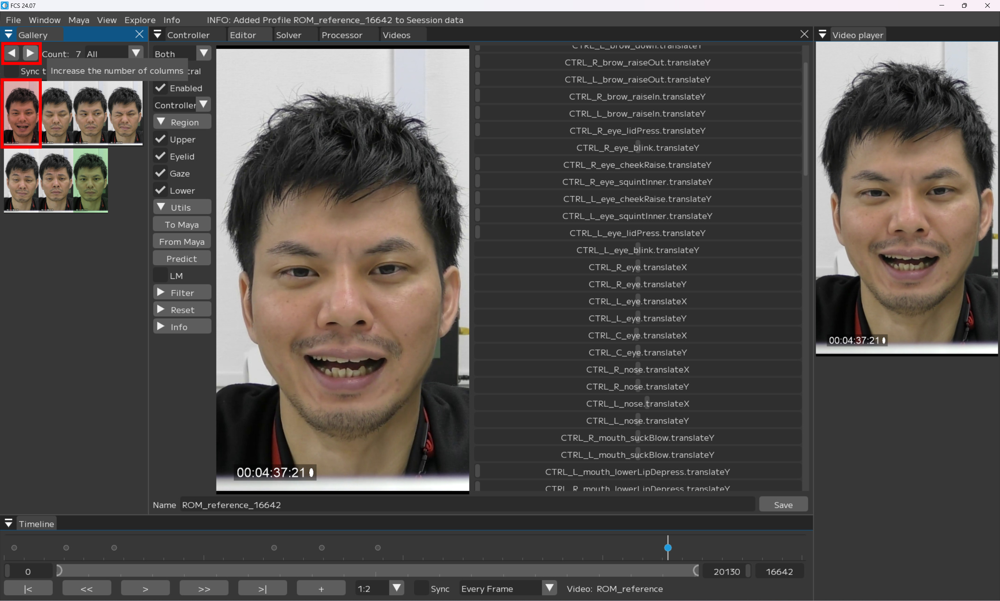
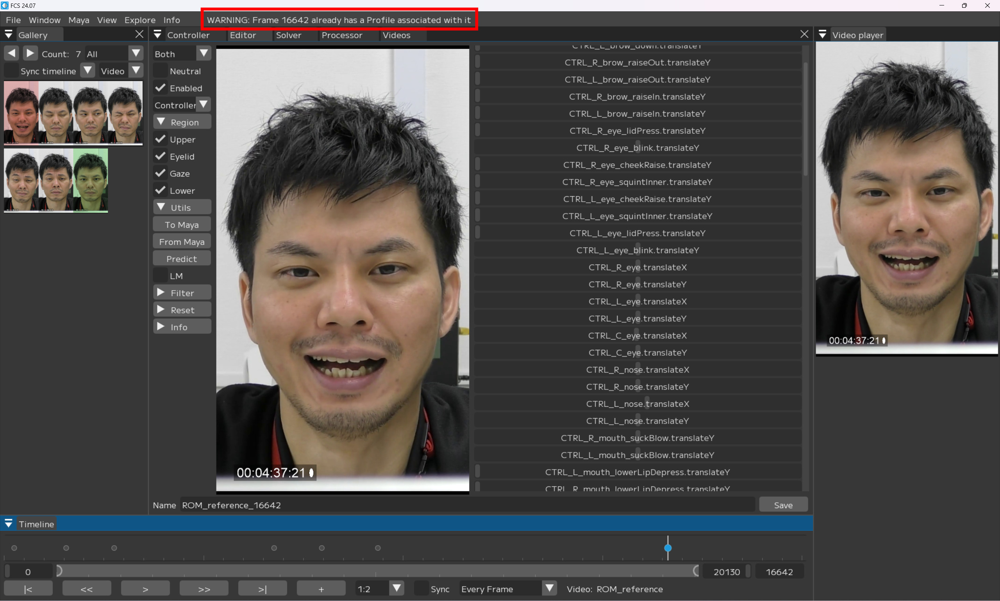

Profileの作成
Profileを作成する前にまず使用する動画をFCSに読み込みます。
解析動画をimportする
Window→VideosでVideosウィンドウが開きます。
Videosウィンドウでは解析したい動画を開いたり、インポートすることができます。

Windows→Videos

Import
Importを押すとウィンドウがポップアップされるので、解析したい動画をクリックし開きます。

Note
Shift+クリックで複数同時にimportできます。

Videosウィンドウにimportした動画が表示されます。
Profile（プロファイル）について
様々な表示のProfileを追加することで解析の精度が上がっていきます。
単純に数が多ければ良いわけではなく、似た表情のProfileに対し、コントローラーの数字が違ってしまった場合、ノイズになってしまうため注意が必要です。
また、解析する動画毎にProfileを1つ以上作成することを推奨しています。
Note
ROM体操と呼ばれる約50個のProfileの作成をオススメしています。
ROM体操の表情については、スターターキット同梱のPDFファイルをご参照ください
読み込んだ動画をFCSで開く
開きたい動画ファイル名の上で右クリック → 【Open】
VideoPlayer上に動画が表示されます。
動画ファイル名の上で右クリック → 【Open】 |
|


Profileの追加方法
VideoTimelineウィンドウの
スライダーを動かし表情の登録を行いたいフレームで止め、【+】を押す。
Galleryに指定したフレームの画像が追加されます。

Note
プロファイルを追加した際の枠について 赤：数値がデフォルト状態/未編集のProfile
緑：「Neutral」に ☑ を入れて登録したProfile
青：選択中（編集中）のprofile
黒：「Enabled」の ☑ を外し、「Disabled」で登録したprofile
白：リターゲット後、登録したprofile
Neutralの表情の登録
Neutral表情とは、アクターの表情筋に力が入っていないナチュラルな表情のことです。
セッション内で必ず一つNeutral表情を設定してください。
Neutralに ☑
任意の名前に変更
Save
NeutralのProfileは登録が完了すると緑になります。 |
 |

Mayaで表情を調整する場合
VideoTimelineウィンドウのスライダーを動かし表情の登録を行いたいフレームで止め+を押す
Galleryに指定したフレームの画像が追加されます。

値が0（未登録）のProfileは赤枠
追加した赤色の画像をクリックし、Editor画面に表示されている画像が同じであることを確認

Mayaのコントローラーリグで、追加したアクターの表情と同じになるようにキャラクターの表情を調節

【From Maya】をクリックすると、Mayaでの調整情報がFCSに反映されます。

Note
Syncのプルダウンで「From Maya at save」もしくは「Both」にしている場合は、調整した数値が自動で同期されます。
Note
コントローラーの登録忘れがあった場合は再度開いたときに作成した表情と異なる場合があります。
その際は、再度登録し忘れたコントローラーを登録しプロファイルの再登録を行ってください。
Nameを任意の名前に変更
Save

Note
名前は必ずしも変更する必要はありません。
ーーーーーーーーーーーー 以下未確認！ ーーーーーーーーーーーー
FCS上で表情を調整する場合
VideoTimelineウィンドウのスライダーを動かし表情の登録を行いたいフレームで止め+を押す
Galleryに指定したフレームの画像が追加されます。
値が0（未登録）のProfileは赤枠
追加した赤色の画像をクリックし、Editor画面に表示されている画像が同じであることを確認
Syncが「No Sync」の場合はProfileの自動情報共有が行われないためMaya上は1つ前に登録した表情のままになっています。

Note
Syncを「Both」にした状態で開きなおすと デフォルトの表情になります。
既にしている場合はスキップ
【Editor】上の【controller】で、追加したアクターの表情が同じになるようにキャラクターの表情を調節

Note
|
絞り込みたい項目（文字含む）のみ表示されるようにするには… |

{kind=link}
{kind=link}
【To Maya】をクリック

Note
Syncのプルダウンで「To Maya」もしくは「Both」にしている場合は、調整した数値が自動で同期されます。
FCSで調整した内容がMayaに反映されます。
{kind=link}

Predict機能について
本ソフトでは、作成したProfileから自動でリターゲットをしてくれるPredict機能を搭載しています。
ある程度の数のProfileを登録した後で、追加のProfileを登録する際にPredict機能を使えば、
登録済のProfileを基に、ソフトが予想した表情を作成してくれます。
Warning
Predictで自動リターゲットする精度は、登録済のProfileの精度と連動します。
また、動画全体を解析するわけではないので注意が必要です。
VideoTimelineウィンドウのスライダーを動かし表情の登録を行いたいフレームで止め+を押す
Galleryに指定したフレームの画像が追加される
追加した赤色の画像をクリックし、Editor画面に表示されている画像が同じであることを確認
Galleryに追加される |
Editor画面に表示されている画像が同じか確認する |
Predictを実行
valueの数値が変動します。
{kind=link}

MayaにPredict結果が出るので、
調整が必要な場合は調整し、登録できる内容になったら

【Save】する
{kind=link}

Profileを作成するときの注意点
ーーーーーーーーーーーー 以下編集中 ーーーーーーーーーーーー
目を閉じる/薄目の時のGaze登録について
Warning
目を閉じる、薄目のプロファイルで黒目が見えないものは登録する際にGazeの ☑ を外してください
解析結果の精度が低下してしまう可能性があります
例：眉のぎゅっと絞る動きを作りたい時には

表情を調整した上で

Regionのgaze/lowerの ☑ を外す

Save
解析結果が好ましくない場合
Warning
解析する動画は、必ず1動画1profile以上作成するようにしてください Profileを作成していない場合、精度が十分ではない解析結果が出力される可能性があります
Videosウィンドウの「Profiles」をご参照ください

「Profiles」が表示されない場合
メニューバー上部で右クリック
「Profiles」に ☑ を入れる

トラブルシューティング
＋キーを押してもGalleryにProfileが追加されない場合
＋キーを押してもGalleryにProfileが追加されない場合
Galleryの表示ウィンドウが小さいケースが考えられます。

その場合、Galleryウィンドウの◀→をクリックすると追加したProfileが表示されます。
{kind=link}

Note
FCSでは同一フレームのProfileは重複して追加されないようになっています。
重複した場合、Logウィンドウで
WARNIG:Frame ○○ already has a Profile associated with it
と表示されます。
{kind=link}
